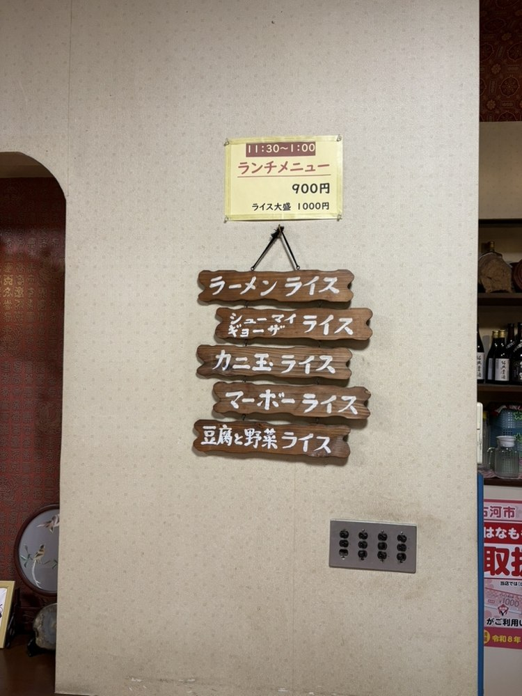
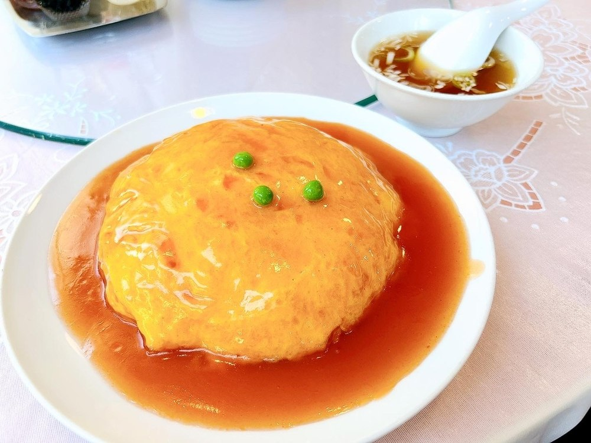
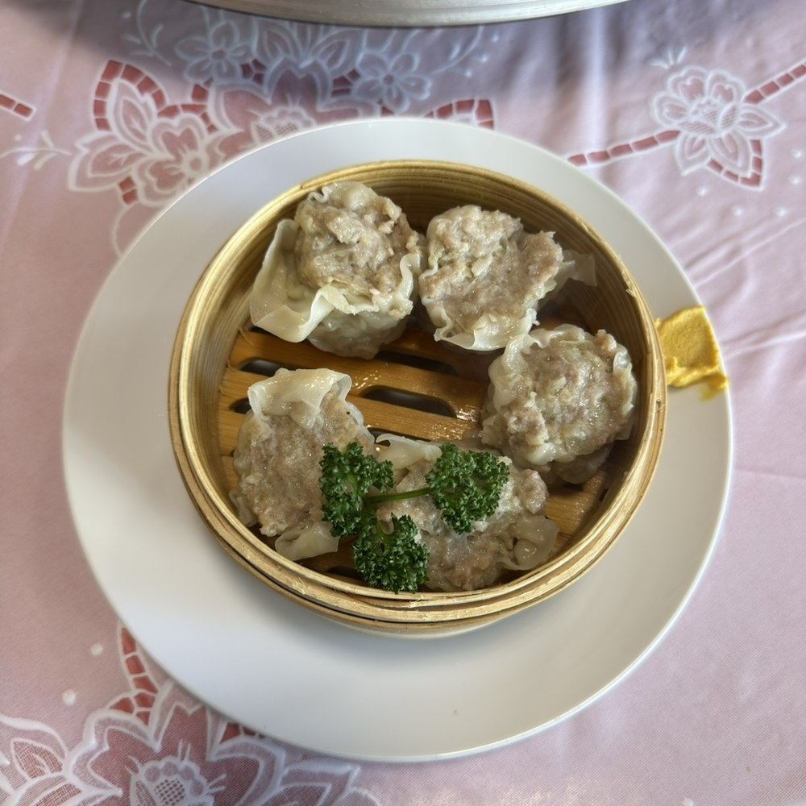
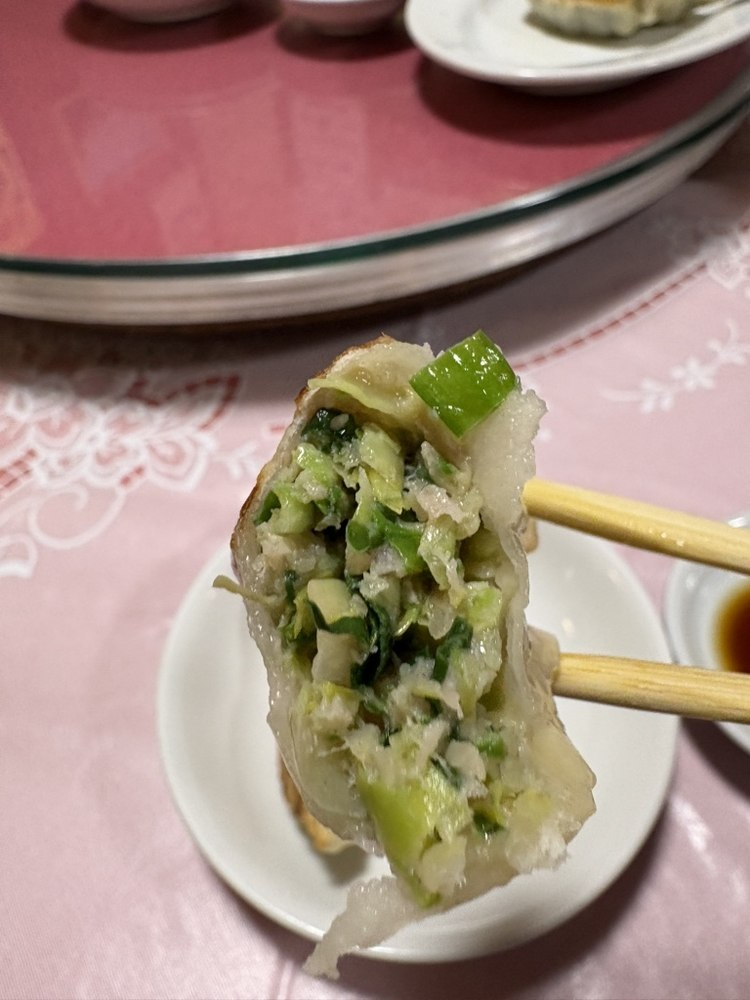

麺類・ご飯類から、法事やご会食向けのふかひれ・冷菜まで。表示はすべて税込です（2026年4月現在）。お昼のお立ち寄りはランチのお品書きからどうぞ。
ランチ
各900円（ライス大盛は1,000円）。ご提供は11:30〜13:00までです。
- ラーメンライス900円
- シューマイ・ギョーザライスどちらかをお選びいただけます900円
- カニ玉ライス900円
- マーボーライス900円
- 豆腐と野菜ライス900円

麺類
一人前／大盛の2サイズです。
- ラーメン715円大盛 1,045円
- 担々麺935円大盛 1,265円
- タンメン935円大盛 1,320円
- モヤシそば935円大盛 1,320円
- 五目ラーメン935円大盛 1,320円
- かに玉そば990円大盛 1,375円
- トリそば935円大盛 1,320円
- 五目焼きそば935円大盛 1,320円
- かた焼きそば935円大盛 1,320円
- ワンタン715円大盛 1,045円
- ワンタン麺990円大盛 1,320円
- チャーシュー麺990円大盛 1,320円
- ジャージャー麺990円大盛 1,375円
- エビそば1,210円大盛 1,650円
- エビ焼きそば1,210円大盛 1,650円
- 冷やし中華5〜9月限定990円大盛 1,375円


ご飯類
一人前／大盛の2サイズです。
- チャーハン770円大盛 1,100円
- エビチャーハン1,045円大盛 1,485円
- カニチャーハン990円大盛 1,375円
- 中華丼935円大盛 1,320円
- 天津丼990円大盛 1,375円
- ライス308円大盛 418円

点心類・甘味
- シュウマイ（5個）715円
- ギョーザ（7個）715円
- 杏仁豆腐 ミニ385円
- 杏仁豆腐 レギュラー660円


シュウマイ（冷蔵）とギョーザ（冷凍）は、お持ち帰り用もご用意しております。お値段は店頭にてご案内いたします。
冷菜
小盆／中盆の2サイズです。
- 冷菜盛り合わせ小盆 3,960円中盆 6,160円
- クラゲ冷菜小盆 3,080円中盆 4,510円
- バンバンジー小盆 2,310円中盆 3,520円
- チャーシュー冷菜小盆 2,310円中盆 3,520円
- ピータン小盆 1,430円中盆 2,160円
ふかひれ
法事・ご会食のコースにもお使いいただけます。
- ふかひれ姿煮込み一枚 8,800円より
- ふかひれスープ小盆 6,600円中盆 8,800円
鶏肉料理
小盆／中盆の2サイズです。
- 鶏肉とカシューナッツ炒め小盆 2,090円中盆 3,300円
- 鶏肉とセロリ炒め小盆 2,090円中盆 3,300円
- 鶏肉とギンナン炒め小盆 2,090円中盆 3,300円
- 骨付き唐揚げ小盆 2,090円中盆 3,300円
- 揚げ鶏肉の薬味汁かけ小盆 2,090円中盆 3,300円
豚肉料理
小盆／中盆の2サイズです（角煮を除く）。
- 回鍋肉小盆 1,760円中盆 2,640円
- 青椒肉絲小盆 2,090円中盆 3,300円
- スブタ小盆 1,760円中盆 2,640円
- 肉団子小盆 2,420円中盆 3,630円
- 角煮（5枚）3,300円より
エビ料理
小盆／中盆の2サイズです。
- エビチリ小盆 2,420円中盆 3,630円
- エビと玉子の炒め小盆 2,090円中盆 3,300円
- エビの塩味炒め小盆 2,420円中盆 3,630円
- エビとカシュナッツ炒め小盆 2,420円中盆 3,630円
- エビの衣揚げ小盆 2,420円中盆 3,630円
牛肉料理
小盆／中盆の2サイズです。
- 青椒肉絲（牛）小盆 2,420円中盆 3,630円
- 細切り牛肉とセロリ炒め小盆 2,420円中盆 3,630円
海鮮そのほか
小盆／中盆の2サイズです。
- かに玉小盆 1,760円中盆 2,640円
- 麻婆豆腐小盆 1,650円中盆 2,530円
- ナス炒め小盆 1,870円中盆 2,860円
- 八宝菜小盆 2,090円中盆 3,300円
- 豆腐入り八宝菜小盆 2,090円中盆 3,300円
- ウナギ炒め小盆 2,970円中盆 4,400円
- カキと豆腐の煮込冬季限定小盆 2,200円中盆 3,410円
スープ
小盆／中盆の2サイズです。
- 野菜スープ小盆 880円中盆 1,320円
- 玉子スープ小盆 880円中盆 1,320円
- コーンスープ小盆 880円中盆 1,320円
- なめこスープ小盆 990円中盆 1,430円
お飲みもの
- 紹興貴酒 3年熟成 フルボトル2,200円
- 紹興貴酒 3年熟成375ml1,430円
- 紹興貴酒 3年熟成180ml770円
- 紹興貴酒 10年熟成 フルボトル5,170円
- 杏露酒 フルボトル2,200円
- 杏露酒グラス（ロック・ソーダ割り）715円
- キリンラガー大びん880円
- アサヒスーパードライ大びん880円
- エビス中びん770円
- プレミアムアルコールフリー495円
- 水割り・お湯割り・ウーロンハイ・ロック660円
- ウィスキーロック・水割り715円
- 角ハイボール605円
- 梅酒ロック・ソーダ割り715円
- ボトル麦・いいちこ／芋・幻の露／ウイスキー・角瓶5,280円
- 自家製 梅ソーダ梅シロップのソーダ割りです385円大 605円
- 冷たいお飲み物バヤリースオレンジ・三ツ矢サイダー・コカ・コーラ・ウーロン茶・中国梅ジュース（酸梅湯）各385円
- 温かいお飲み物ジャスミン茶・プーアル茶・ウーロン茶・緑茶（ティーポットでお持ちします）各660円
日本酒は冷酒・燗酒各種をご用意しております。価格は店内の掲示にてご案内いたしております。